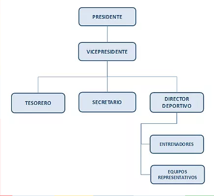

HISTORIA
El Club Deportivo “Leonas Balonmano” (Registro IND N°1306378-8), fue creado el 5 de octubre de 2016, y nació de la fusión de dos importantes Clubes de Balonmano de la Región Metropolitana: El Club de Balonmano “La Reina” y Club de Balonmano “Saint Rose” (Rama Femenina). El proyecto deportivo se desarrolla sobre la base de equipos representativos de damas en las categorías mini, infantil, cadetes, juvenil y adultas, y una Escuela para categoría menores. Nos hemos fijado como objetivo principal, transformarnos en un Club líder a nivel nacional e internacional, compuesto por jugadoras con una sólida formación valórica y deportiva de alta exigencia, donde se promueva el deporte en un ambiente de respeto, compañerismo, integración y compromiso. Queremos hacer una contribución directa al Balonmano chileno, conseguir destacados resultados deportivos, y formar jugadoras con proyecciones nacionales e internacionales, que se destaquen por su perseverancia, responsabilidad, actitud y garra, principios fundamentales del Club. Hoy nuestras “Leonas” ya destacan. Varias jugadoras del Club integran la Selección Nacional Femenina de Balonmano en las categorías Infantil, Cadetas, Junior, Juvenil y Adulta, las cuales ha participado representado a Chile, en torneos sudamericanos, panamericanos y mundiales, de sus respectivas categorías. ¡SE UNA LEONA!!
DIRECTIVA
REGLAMENTO INTERNO